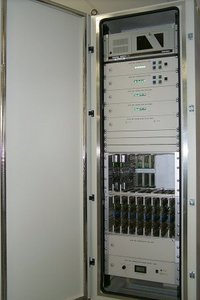

In radio astronomy the term “correlator” usually refers to a digital device that takes two Nyquist-sampled digital streams representing the voltages present in one or more radio receivers and computes the cross-correlation function as a function of time lag. Unlike the instantaneous voltages, the cross correlation function can be integrated without degradation of the signal, and dumped at a much lower data rate to a computer. Correlators are at the heart of all modern radio telescope aperture synthesis arrays such as the VLA.

Astronomers make use of a remarkable property of the cross correlation function, which is that the Fourier transform of it represents the power spectrum, or power as a function of radio frequency. This is known in signal processing circles as the “Wiener-Kninchen” theorem.
The number of “lags” determines the spectral resolution of the correlator, which are usually some power of 2. Prior to the 1990s correlators were most often comprised of custom chips that could rapidly compute the cross-correlation function of two digital streams often only comprising of 2 bits of significance. These correlators could compute the cross correlation function over a set number of “lags” and the limited number of bits resulted in slight losses in signal to noise, and the need to make statistical corrections to estimate the true power – the so-called “van Vleck” correction.
Modern field programmable gate arrays (FPGAs) have now largely replaced custom hardware in correlator design and implementation. FPGAs can compute millions of FFTs (fast Fourier transforms) per second and produce the power spectrum with more bits of precision and less subsequent artefacts. For limited bandwidths, correlators can now be implemented in software on general purpose computers.
When a correlator is fed two streams that are identical, it acts as an “autocorrelation spectrometer” or autocorrelator.
There are two main “flavours” of correlator in multi-element telescopes, the so-called XF and FX versions. XF correlators compute the cross-correlation function first for each baseline, then FFT the result, whereas it is also possible to FFT the input data streams independently and cross-multiply the results for each baseline. The two approaches are mathematically identical.